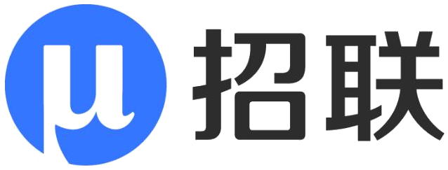

01 / DELIVERY
把项目推到落地
把目标拆成节点、责任和时间，盯到真正交付。这是十一年里占我时间最多的事，也是最难被别人代替的部分。
我是方刚强，在金融助贷行业做了 11 年。 这些年主要就干两件事：把项目落到地上，把系统搭起来—— 然后一轮轮优化、简化，让它长期跑得下去。
01WHAT I DO
十一年下来，工作内容一直在变，但真正在做的事始终接近这四件。
把目标拆成节点、责任和时间，盯到真正交付。这是十一年里占我时间最多的事，也是最难被别人代替的部分。
把反复出现的动作沉淀成流程、模板和工具，让结果不完全依赖某个人记性和临场发挥。
定期回头拆一遍流程：去掉多余环节，合并重复动作。对外只留必要的几步，把复杂放在后台。
上线只是开始。持续观察、迭代、修正——我更在意它能不能在人员更替、业务变化之后依然稳定。
02ABOUT
华南师范大学本科，金融助贷 11 年：一半做项目管理，一半把经验做成流程与工具。
做法 01
行业变化快、链条长、细节多，任何一环松掉，整条流程就退回原点。把上下游摸清楚，比急着开工更能省下返工。
做法 02
目标拆成节点、责任和时间，全部落到纸面上。进度不是一句「在做」，而是能被抽查的东西。
做法 03
一件事做完，如果没留下流程和工具，就只是又做了一遍。所以每次收尾，都让它下次更省力。
FOCUS
03EXPERIENCE
小赢做质量管理，招联做流程制定，乐信做项目管理——三家平台，主线没变。
质量管理
小赢科技 · 金融科技

流程制定
招联金融 · 持牌消费金融
项目管理
乐信集团 · 上市金融科技
04MY CREED
热爱，才能持续创新；不断优化简化，做长期有意义的事情。
05NEXT